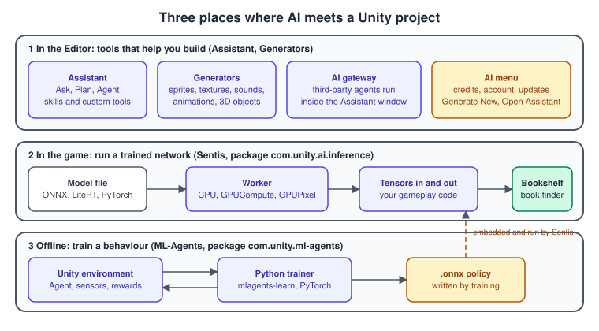
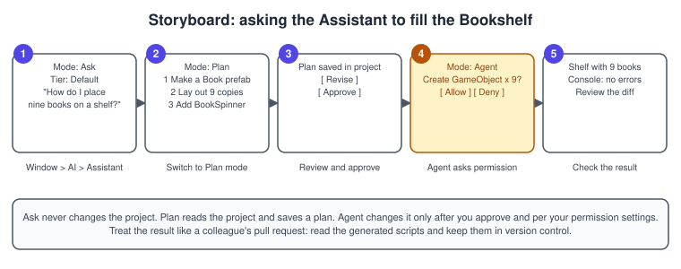
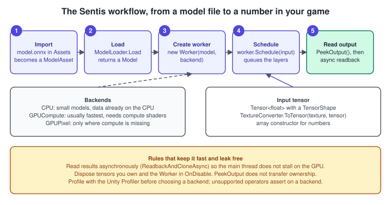
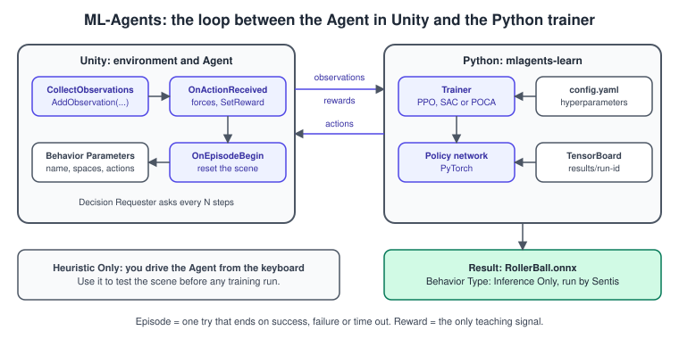

Unity AI and ML
|
This content was generated with the assistance of AI and should be verified against the official documentation before being relied on in production. |
"AI in Unity" is three unrelated things that share a menu. Tools in the Editor use large models in the cloud to answer questions, write code and generate assets for you. A runtime library runs a small trained neural network inside your game, on the player’s own CPU or GPU. A training toolkit turns a scene into a gym where a character learns by trial and error. They have different packages, different costs, different failure modes and different reasons to exist, and picking the right one is most of the work.
The facts were checked in November 2026. The page documents Unity 6.3 LTS (6000.3) with the packages of its released list: the in-editor AI assistant (com.unity.ai.assistant) 2.21,
Sentis (com.unity.ai.inference) 2.6 and ML-Agents (com.unity.ml-agents) 4.2. These are packages, so they update independently of the Editor; check the version in the Package Manager before you
follow a procedure. The Assistant needs Unity 6000.0.76f1, Unity 6.3 or later, and a Unity account; Sentis runs on every platform Unity supports; ML-Agents needs Unity 6000.0 or later and a Python
environment for training. In the running example, Bookshelf, the Assistant helps lay out the shelf, a Sentis model reads the number plate of a shelf, and an ML-Agents policy learns to catch falling books
for the "Shelve-it" game (the shared model is bookshelf.glb).

Names, as they are today
Product names changed several times, and old tutorials use names that no longer match the Package Manager.
| Name you will meet | What it is now |
|---|---|
Sentis |
the package |
Inference Engine |
the display name of the same package in versions 2.2 and 2.3; the code namespace stayed |
Assistant, in-editor AI assistant |
the package |
Generators |
the asset generation tools (sprites, textures, materials, sounds, animations), reachable from Assistant or from the AI menu’s Generate New |
AI menu |
the AI button of the Editor toolbar: credits, account, updates, and the entries that open Assistant and the generators |
ML-Agents |
the package |
If an old tutorial tells you to install the package by the name Inference Engine, search for either name in the Package Manager; the package name com.unity.ai.inference has not changed.
The Assistant in the Editor
The Assistant is a chat window inside the Editor. You describe a task in natural language; it can answer, plan or act on your project. It runs on Unity’s cloud models and consumes AI credits, which the AI menu displays. Your organisation can enable, disable and meter these features in the Unity Dashboard AI settings.
Install and open it
-
Make sure the Editor is Unity 6000.0.76f1, Unity 6.3 or later.
-
In the Editor toolbar select AI, review and accept the terms, and select Agree and install Unity AI. Unity installs the required packages, including Assistant.
-
If the AI menu is missing, open Window > Package Manager, use the Add menu and Install package by name, enter
com.unity.ai.assistantand select Install. -
Open it with Window > AI > Assistant and dock the window.
-
Choose a mode and a model tier, optionally attach assets or objects with the plus button, type the request and submit it.

Modes and model tiers
| Ask | Plan | Agent | |
|---|---|---|---|
Purpose |
explanations and guidance |
a step-by-step plan for a complex task |
performs actions in the project |
Changes scenes or assets |
no |
no, until you approve |
yes |
Tools |
read-only |
read-only while planning |
read and write |
Needs approval |
not for reads |
yes, before implementation |
per your permission settings |
Example |
"How do I create a weapon system?" |
"Create a weapon system for my game." |
"Add a weapon system to my game." |
Source: Assistant: Modes and model tiers
Three tiers trade quality against speed and cost: Unity Lite for low-latency everyday work such as scripting and small edits, Unity Default as the balanced standard, and Unity Ultra for complex or ambiguous multi-step tasks, which costs significantly more credits and falls back to Default when Ultra capacity is unavailable. In Agent mode every modifying action goes through a permission prompt, and the conversation lists each tool call with its parameters and result so you can inspect what it did.
Generators and skills
Generators create sprites, textures, materials, cubemaps, 3D objects, terrain layers, sound clips and animation clips from a text prompt or reference input. You can use a generator window directly for fine control, or let Assistant choose the generator that matches the asset you describe. Skills are specialised bundles of instructions and tools; in Ask mode they give focused guidance and in Agent mode they can act in the Editor. You can ask "What skills are available in this project?" to list them.
Making the Assistant work for your project
You can add your own tools. A tool is a public static method with an [AgentTool] attribute, and each parameter has a [ToolParameter] attribute. The descriptions are what the model reads
to decide when to call it, so they must be clear and specific. This one counts the books in the open scene and is useful to a prompt such as "how many books are on the shelf?".
#if UNITY_EDITOR
using System.Linq;
using Unity.AI.Assistant.FunctionCalling;
using UnityEngine;
namespace Example.Bookshelf.Editor
{
/// <summary>Read-only tools the Assistant can call while it works on the Bookshelf scene.</summary>
public static class BookshelfAssistantTools
{
[AgentTool("Counts the GameObjects in the open scenes whose name starts with the given prefix.", "Bookshelf.CountByPrefix")]
public static int CountByPrefix(
[ToolParameter("Name prefix to match, for example Book.")] string prefix)
{
return Object.FindObjectsByType<Transform>(FindObjectsSortMode.None)
.Count(t => t.name.StartsWith(prefix, System.StringComparison.Ordinal));
}
}
}
#endifSource: Assistant: Create custom tools
The tool ID is dot-separated PascalCase and must be unique; allowed parameter types are the primitive types, enums, arrays, lists, dictionaries and serialisable classes, and a tool may return
Task<T> when it is asynchronous. To start the Assistant from your own editor UI, AssistantApi (namespace Unity.AI.Assistant.Editor.Api) has Run, which opens the window with a prompt,
PromptThenRun, which shows a popup to edit the prompt first, and RunHeadless, an extension method on an agent that returns the final answer as a string.
#if UNITY_EDITOR
using System.Threading.Tasks;
using Unity.AI.Assistant.Editor.Api;
using UnityEditor;
namespace Example.Bookshelf.Editor
{
public static class BookshelfAssistantMenu
{
[MenuItem("Tools/Bookshelf/Ask Assistant to Review the Shelf")]
public static async Task ReviewShelf()
{
// Opens the Assistant window and submits the prompt; the task finishes with the final answer.
await AssistantApi.Run("Review the open scene: list books without a BookSpinner and any missing colliders.");
}
}
}
#endifAI gateway and MCP
AI gateway lets you pick a third-party coding agent, for example Claude Code, Codex, Gemini or Cursor, inside the Assistant window; you authenticate each agent with your own credentials and those agents can then act in the Editor, for instance by creating scripts, reading console logs and changing project content. Assistant can also connect to external MCP servers and use their tools in a conversation. The package’s MCP server, which exposes the Editor to external AI clients, is marked deprecated in the 2.21 manual, which points to the Unity command-line interface as the replacement that is faster, more stable and can target the runtime as well as the Editor. Treat both as a way to run powerful tools against your project: review which permissions you grant.
See the MCP architecture page for the protocol itself.
Using it well
-
Ask for a plan first when the task touches more than one system; read it before approving. A plan is also a good record of what you decided.
-
Keep the project in version control and commit before an Agent run, so any unwanted change is one revert away.
-
Read generated scripts as you would a pull request: check the namespace, the lifecycle method, allocations in
Updateand the APIs it uses. A model can write the obsolete property that its training data knew, such asRigidbody.velocityinstead ofRigidbody.linearVelocity. -
Attach the relevant objects and assets instead of describing them; images and screenshots are supported as context.
-
Generated art and audio comes from models that Unity or its partners run. Read the terms for ownership and permitted use before you ship it, and keep a record of what was generated.
-
Do not paste secrets or unreleased data into prompts.
Sentis: running a trained model inside the game
Sentis is a neural network inference library. It imports a trained model and runs it in real time with the CPU or GPU of the target device, on every platform Unity runs on. It does not train models; you train in PyTorch, TensorFlow or another framework, export, and import the file into Unity. Typical uses are small classifiers (reading a shelf number plate), image filters, pose estimation, speech or text models and learned behaviours produced by ML-Agents.

The workflow
-
Add the model file to
Assets. Sentis imports ONNX files with opset 7 to 25, LiteRT (formerly TensorFlow Lite) files and PyTorch exported programs that are decomposed to Core ATen operators. -
Reference the imported
ModelAssetfrom a script field, or load it withResources, and callModelLoader.Loadto get a runtimeModel. -
Create an input
Tensor<float>with aTensorShape.TextureConverter.ToTensorfills one from a texture. -
Create a
Workerwith the model and aBackendType. -
Call
Schedulewith the inputs. Scheduling is asynchronous: tensor work may still be running afterwards. -
Get the output with
PeekOutputand read it. Reading the data on the CPU needs the work to finish and, on a GPU backend, a transfer back. -
Dispose the worker and the tensors you own.
The three backends are:
| Backend | Use it when |
|---|---|
|
the model is small, or the inputs and outputs are already on the CPU. It uses Burst; on the Web platform Burst compiles to WebAssembly, which can be slow |
|
the usual fastest choice for most models, and it avoids a transfer when outputs stay on the GPU. On DirectX 12 platforms it can use DirectML for acceleration |
|
only on a platform that lacks compute shaders; check |
If a backend does not support an operator in the model, the worker asserts; the supported-operator lists for ONNX, LiteRT and PyTorch show which. Which backend is faster depends on the model, the platform’s compute shader and multithreading support and what else the game is doing, so measure with the Profiler instead of assuming.
A complete example: reading the number plate of a shelf
Every shelf of the Bookshelf carries a handwritten digit. The script below classifies the digit image with an MNIST-style model (28 by 28 greyscale input, ten outputs; the Sentis manual’s own example
uses mnist-8.onnx from the ONNX Model Zoo). It reads the result asynchronously so the frame does not wait for the GPU.
using System;
using Unity.InferenceEngine;
using UnityEngine;
namespace Example.Bookshelf.AI
{
/// <summary>Classifies a 28 x 28 digit image into 0 to 9 with a model run by Sentis.</summary>
public sealed class ShelfNumberReader : MonoBehaviour
{
[SerializeField] ModelAsset m_ModelAsset;
[SerializeField] Texture2D m_Plate;
[SerializeField] BackendType m_Backend = BackendType.GPUCompute;
Worker m_Worker;
Tensor<float> m_Input;
/// <summary>The digit with the highest score, or -1 before the first result.</summary>
public int Digit { get; private set; } = -1;
/// <summary>The softmax probability of <see cref="Digit"/>.</summary>
public float Confidence { get; private set; }
void OnEnable()
{
Model model = ModelLoader.Load(m_ModelAsset);
m_Worker = new Worker(model, m_Backend);
m_Input = new Tensor<float>(new TensorShape(1, 1, 28, 28));
}
[ContextMenu("Read plate")]
public async void ReadPlate()
{
// Resample the texture into the input tensor, then queue the model's layers.
TextureConverter.ToTensor(m_Plate, m_Input);
m_Worker.Schedule(m_Input);
// PeekOutput does not transfer ownership, so it is not disposed here.
var output = m_Worker.PeekOutput() as Tensor<float>;
// A non-blocking readback returns a CPU copy that we own and must dispose.
using Tensor<float> scores = await output.ReadbackAndCloneAsync();
float[] logits = scores.DownloadToArray();
int best = 0;
for (int i = 1; i < logits.Length; i++)
{
if (logits[i] > logits[best])
{
best = i;
}
}
float sum = 0f;
foreach (float v in logits)
{
sum += Mathf.Exp(v - logits[best]);
}
Digit = best;
Confidence = 1f / sum;
Debug.Log($"Shelf number {Digit} with confidence {Confidence:P0}");
}
void OnDisable()
{
m_Input?.Dispose();
m_Worker?.Dispose();
}
}
}To use it: install Sentis from the Package Manager, import an MNIST ONNX model, set the plate texture’s Non-Power of 2 import setting to None (in Advanced), add the component to a GameObject, drag the model and the texture into its fields and choose Read plate from the component’s context menu. The softmax is computed in C# here; the manual’s own example instead adds it to the model with a functional graph, which keeps the whole computation on the backend.
Memory and the main thread
-
Call
Disposeon every worker and every tensor you create, and on every clone thatReadbackAndCloneorReadbackAndCloneAsyncreturns. Disposing is what frees GPU resources; the garbage collector does not. -
A handle from
PeekOutputstays owned by the worker’s allocator: do not dispose it. -
ReadbackAndCloneandCompleteAllPendingOperationsblock the main thread until the GPU finishes. PreferReadbackAndCloneAsync, orReadbackRequestfollowed byIsReadbackRequestDone, and re-request after every newSchedule. -
For a large model, split the inference over several frames, one layer group at a time, so a frame does not exceed its budget.
ML-Agents: learning a behaviour
ML-Agents turns a Unity scene into a learning environment. The C# package lets an Agent observe, act and receive rewards; the algorithms that learn live in a companion Python package, which
talks to the Editor or to a built player. Training can use reinforcement learning, imitation learning or other methods; a trained agent can control a non-player character or play-test a build.
The package does not contain the training algorithms, and the trained network is embedded back into the scene and run by Sentis.

Installing it
-
In Unity, open Window > Package Manager, choose the Add menu and Add package by name, and enter
com.unity.ml-agents. The Editor must be Unity 6000.0 or later. -
Create a Python 3.10.12 environment, for example with Conda:
conda create -n mlagents python=3.10.12, thenconda activate mlagents. -
Install PyTorch from 2.1.1 up to 2.8.0 first, for example
pip3 install "torch>=2.1.1,<=2.8.0". Later PyTorch versions change the ONNX export in a way that breaks ML-Agents model export. -
Install the trainer:
python -m pip install mlagents==1.1.0.
The PyPI package 1.1.0 is compatible with the 4.0, 4.1 and 4.2 Unity packages, but it does not include later Python-side fixes; install the Python packages from the repository’s matching release branch when you need them.
A complete example: catching a falling book
The game "Shelve-it" asks a basket to catch books falling from random positions. This agent has three observations (the basket’s x position, and the falling book’s x and y relative positions), one continuous action (move left or right) and a reward of +1 for a catch and -1 for a miss. It does not use physics, which keeps the example deterministic and fast to train.
using Unity.MLAgents;
using Unity.MLAgents.Actuators;
using Unity.MLAgents.Sensors;
using UnityEngine;
using UnityEngine.InputSystem;
namespace Example.Bookshelf.AI
{
/// <summary>Moves a basket sideways to catch a book that falls from a random x position.</summary>
public sealed class BookCatcherAgent : Agent
{
[SerializeField] Transform m_Book;
[SerializeField] float m_HalfRange = 4f;
[SerializeField] float m_MoveSpeed = 0.25f;
[SerializeField] float m_FallPerStep = 0.1f;
[SerializeField] float m_CatchHalfWidth = 0.6f;
[SerializeField] float m_StartHeight = 6f;
public override void OnEpisodeBegin()
{
transform.localPosition = new Vector3(0f, 0f, 0f);
m_Book.localPosition = new Vector3(Random.Range(-m_HalfRange, m_HalfRange), m_StartHeight, 0f);
}
public override void CollectObservations(VectorSensor sensor)
{
Vector3 basket = transform.localPosition;
Vector3 book = m_Book.localPosition;
// Normalised observations train faster than raw metres.
sensor.AddObservation(basket.x / m_HalfRange);
sensor.AddObservation((book.x - basket.x) / m_HalfRange);
sensor.AddObservation((book.y - basket.y) / m_StartHeight);
}
public override void OnActionReceived(ActionBuffers actions)
{
float move = Mathf.Clamp(actions.ContinuousActions[0], -1f, 1f);
Vector3 basket = transform.localPosition;
basket.x = Mathf.Clamp(basket.x + move * m_MoveSpeed, -m_HalfRange, m_HalfRange);
transform.localPosition = basket;
Vector3 book = m_Book.localPosition;
book.y -= m_FallPerStep;
m_Book.localPosition = book;
if (book.y <= basket.y)
{
bool caught = Mathf.Abs(book.x - basket.x) <= m_CatchHalfWidth;
SetReward(caught ? 1f : -1f);
EndEpisode();
}
}
public override void Heuristic(in ActionBuffers actionsOut)
{
// Lets you test the scene from the keyboard with Behavior Type set to Heuristic Only.
ActionSegment<float> continuous = actionsOut.ContinuousActions;
Keyboard keyboard = Keyboard.current;
float axis = 0f;
if (keyboard != null)
{
if (keyboard.leftArrowKey.isPressed) { axis -= 1f; }
if (keyboard.rightArrowKey.isPressed) { axis += 1f; }
}
continuous[0] = axis;
}
}
}Set it up in the Editor:
-
Create an empty parent
TrainingArea, and under it a flatFloor, a small cubeBasketthat carries the script, and a sphere or cubeBook. DragBookinto the script’s field. -
Add Behavior Parameters to the basket: Behavior Name
BookCatcher, Vector Observation Space Size 3, Continuous Actions 1. -
Add a Decision Requester with Decision Period 1, because the script moves the book once per decision.
-
Set Max Step on the agent (for example 200) so a stuck episode ends by time out.
-
Set Behavior Type to Heuristic Only, press Play and move the basket with the arrow keys: the agent must reset after each catch or miss, and the Console must be clean.
-
Duplicate the training area several times to collect more experience per second.
Source: ML-Agents: Agents
Training
The training configuration is a YAML file whose behaviour name matches the Behavior Name in the Editor. The values below follow the manual’s small example, which uses small batch and buffer sizes because the observation and action spaces are tiny.
behaviors:
BookCatcher:
trainer_type: ppo
hyperparameters:
batch_size: 64
buffer_size: 640
learning_rate: 3.0e-4
beta: 5.0e-4
epsilon: 0.2
lambd: 0.99
num_epoch: 3
learning_rate_schedule: linear
network_settings:
normalize: false
hidden_units: 128
num_layers: 2
reward_signals:
extrinsic:
gamma: 0.99
strength: 1.0
max_steps: 200000
time_horizon: 64
summary_freq: 10000# Run from the folder that holds the config file, with the mlagents environment active.
mlagents-learn BookCatcher.yaml --run-id=BookCatcher01
# Then press Play in the Editor (with Behavior Type set to Default) to start the training run.
# In another terminal, watch the learning curves.
tensorboard --logdir results --port 6006trainer_type can be ppo, sac or poca (the last is for cooperative groups). Training writes the learned policy, a .onnx file, under results/<run-id>. To resume an interrupted run use --resume with the same
run ID; --force reuses the ID and overwrites the old results. To use the policy, drag the .onnx file into the Model field of Behavior Parameters and set Behavior Type to Inference Only or Default:
the agent then acts with the network, run through Sentis. For most ML-Agents models CPU inference (Burst) is faster than GPU; use the GPU only for the ResNet visual encoder or for many agents with visual observations.
Source: ML-Agents: Sentis
The toolkit supports models trained by its own trainers. To run a network that you trained elsewhere, use Sentis directly instead of ML-Agents.
Choosing between them
| You want to | Use | Because |
|---|---|---|
get help writing or reviewing code, or scaffolding a scene |
Assistant |
it reads your project and can act with your approval |
make placeholder sprites, textures or sounds quickly |
Generators |
output is a starting point; check licence terms and quality before shipping |
run a classifier, filter or speech model in the shipped game |
Sentis |
runs locally and offline on the player’s device |
teach an NPC a skill that is hard to script |
ML-Agents, then Sentis |
you define observations and rewards; the learned network ships as an |
path-finding, state machines, behaviour trees |
AI Navigation and the Behavior package |
deterministic and cheap; see Navigation and AI |
Common mistakes
-
Treating Assistant output as correct. It can invent APIs or use removed ones. Compile, run and read what it wrote.
-
Using Agent mode on a project that is not in version control. A multi-step change is hard to undo by hand.
-
Searching for "Inference Engine" or "Sentis" and concluding the package is missing. It is one package,
com.unity.ai.inference; install it by that name. -
Copying the old namespace. Code that starts with
using Unity.Sentis;needsusing Unity.InferenceEngine;. -
Reading a result straight after
Scheduleon the main thread. It blocks until the GPU finishes. Read asynchronously. -
Not disposing tensors and workers. GPU memory leaks until the Editor restarts; clones from
ReadbackAndClonemust be disposed too. -
Running a model on
GPUPixelorCPUwithout checking the platform. Pick the backend from the target: compute shaders are missing on some platforms. -
Installing the newest PyTorch for ML-Agents. Keep it between 2.1.1 and 2.8.0, or model export breaks.
-
A behaviour name that does not match the config file. The trainer has no hyperparameters for it and training fails or uses defaults.
-
A reward that can be earned without solving the task. The agent learns the shortcut. Start with a sparse reward and add shaping only when training stalls.
-
Raw, unnormalised observations. Scale values to about one so the network learns faster.
-
Forgetting the Decision Requester. No decisions are requested and the agent does nothing.
Performance notes
-
Inference costs frame time. Profile the worker, choose the backend by measurement and keep the model small; quantisation and a smaller architecture are the first levers.
-
Do not call
Scheduleevery frame if the answer changes rarely; run the model at a lower rate and interpolate. -
ML-Agents training is throughput-bound: duplicate the training area, run several environment copies in parallel, and train from a built executable rather than the Editor when the simulation is heavy.
-
Assistant calls spend credits. Choose Lite for routine edits, Ultra only when the task needs it, and use Plan mode to avoid several failed agent runs.
-
A model in the build adds its file size. Check the size of the imported model asset and compress or prune it before shipping on mobile or Web.
What changed recently
| When | What |
|---|---|
Sentis 2.2 |
the package was renamed Inference Engine, with the namespace |
Sentis 2.4 |
the display name returned to Sentis; no code change needed |
Sentis 2.5 |
direct PyTorch ( |
Sentis 2.6 |
ONNX opset support up to 25; Burst and Mathematics random numbers; compatibility with Fast Enter Play Mode for CoreCLR |
Assistant 2.x |
the Ask, Plan and Agent modes with Unity Lite, Default and Ultra tiers; AI gateway for third-party agents; skills and custom tools |
Assistant 2.21 |
the MCP server of the package is marked deprecated; the Unity command-line interface is the documented replacement |
ML-Agents 4.0 to 4.2 |
requires Unity 6000.0 or later; the Python side moved to gymnasium and caps PyTorch at 2.8.0 |
See also
-
Navigation and AI: AI Navigation 2.0, the Behavior package and finite-state machines for classical game AI.
-
Asset Store and Packages: installing the packages named here.
-
Editor Scripting and Tooling: menu items, editor windows and assemblies for the tools above.
-
Profiling and Optimization: measuring inference cost.
-
Multiplayer and Netcode: services a trained agent could join.
-
C# Scripting and the MonoBehaviour Lifecycle:
OnEnable,OnDisableand async code used above. -
Performance and Profiling: the general view of frame budgets.
-
Reinforcement Learning: the theory behind PPO, rewards and episodes.
-
ONNX and Interoperability: exporting the models that Sentis imports.
-
Deploying and Serving Models: running models outside the Editor.